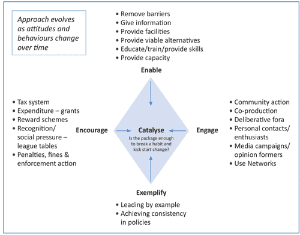

CHAPTER 6
TECHNIQUES OF REGULATION
1. Introduction
1.1
Part K, Chapter 1 sets out the criteria that I consider need to be met by any ‘new more
effective regulatory regime’. Chapters 2-4 look at specific proposals that have been made for
a new approach to regulation of press standards, and Chapter 5 looks at the way that other
countries deal with press standards. This Chapter starts from a rather different position and
looks at the theoretical framework for regulation. This does not purport to be a definitive text
on the theory of regulation; rather it is a brief look at the different ways in which regulation can
be achieved and the circumstances that are conducive to different approaches to regulation
being effective.
2. Regulatory options
2.1
The Terms of Reference talk about making recommendations for a new and more effective
policy and regulatory regime and that it precisely what this Report aims to do. There has
been a lot of talk in the media and elsewhere about the regulation of the press versus self-
regulation of the press as though that were a binary choice. That is not an interpretation
that I accept. It seems to me that there is a wide spectrum of action that can be undertaken,
and that, far from a binary option there is a continuum from no regulation at all, through
to full statutory regulation: a solution can be accessed at any one of a number of points on
that range. This chapter considers, from a theoretical perspective, the various policy and
regulatory tools that are available for use and looks at the pros and cons of each, though I
must reiterate that this is a partial review of the options, not a thorough analysis.
2.2
At the opening of the Inquiry a number of briefing sessions were held that dealt with the
factual background against which the issues under consideration by the Inquiry should be
seen. At one of those briefings Donald McCrae, an expert in regulatory theory, introduced a
model for thinking about regulatory propositions. Specifically, he categorised the potential
approaches to changing behaviour under four headings: engage, enable, encourage and
exemplify. At the same time the Inquiry heard from a number of regulators about different
regulatory regimes and about the different regulatory regimes for the press and the media in
other countries.
2.3
This Chapter starts by considering different ways of securing behavioural outcomes, drawing
on examples where that is helpful. This is a technical consideration of potential models and
how they might operate.
2.4
TheDepartmentforBusinessInnovationandSkills(BIS) setsoutgeneralprinciplesofregulation,
which requires that any regulation and enforcement framework should be capable of being
implemented in a fashion which is demonstrably proportionate, accountable, consistent,
transparent, and targeted.
2.5
There are various ways of categorising regulatory models. One way of doing so is to look at
the level of external intervention. This can be cut at almost any level of specificity but we
have identified four levels which we go on to consider in more detail, namely no regulation,
self-regulation, co-regulation and, finally, statutory regulation.
No regulation
2.6
This concept needs some clarification. For most people ‘no regulation’ would mean no
specific regulation or laws relating to the press. However at present the media are bound by
the law as it applies to the rest of us. This includes many laws that could impact on the sorts
of behaviour in the press that have been complained of in evidence to the Inquiry, such as
Regulation of Investigatory Powers Act 2000 (RIPA), under which the prosecutions for phone
hacking have been made, the Bribery Act 2010, the Fraud Act 2006, the Protection from
Harassment Act 1997 etc. Critically, the Human Rights Act 1998 provides rights both to a
private life and to freedom of expression. There are additional laws relating to press reporting
on criminal cases. The media are also subject to the Data Protection Act 1998, although there
is a specific public interest protection under section 32 for processing data with a view to
publication for journalistic purposes.
2.7
So the concept of ‘no regulation’ should not necessarily be considered to mean that journalists
would be able to operate unfettered by legal constraints.
Pros and cons
2.8
The principles of better regulation dictate that regulation should be ‘proportionate’ – i.e. no
more than is required to achieve the policy objective. Clearly if it is possible to deliver the
desired outcome in the absence of any regulation then no regulation should be introduced. In
practice this means that ‘no regulation’ is an appropriate response when the market is capable
of delivering the required outcome without intervention. The very fact that this Inquiry had
to be established, in the wake of discoveries of serious wrongdoing and criminality, in at least
one national newspaper, is sufficient demonstration that the market alone will not provide
public protection from criminal acts which Parliament and the public have regarded with
abhorrence, and which even those responsible for committing them have not sought to
justify in this Inquiry.
2.9
Furthermore, the law has to be accessible for if there is limited prospect of detecting criminal
behaviour or being able to afford civil proceedings, to that extent, there is no sanction (or, in
the absence of ethical standards) disincentive to comply with the law when to do otherwise
has potential advantages. Thus, if there is a good prospect of being able, say, to intercept
mobile phone communications without being caught (because of the care taken to avoid
alerting the victim and, in the absence of a victim, law enforcement will not be engaged)
and the advantages to be obtained from listening to intercepted messages are sufficiently
beneficial, the fact that others in the market do not engage in that behaviour will not
necessarily prevent it.
Self regulation
2.10
There are many different self-regulatory tools. This section considers self regulation in the
purest sense, where activity is entirely voluntary, where there is no constraint or oversight
from outside of those self-regulating as to the standards that are set or monitoring or
enforcement of compliance with them. There are a number of tools that could potentially fall
within the definition of self-regulation.
Internal governance
2.11
The first is referred to as ‘ internal governance’ ; these are the methods that organisations use
to establish their own cultures and control behaviour within their own organisations. What
happens inside a company is a matter of culture, example, practice and control, and these
internal governance practices and procedures are likely to have the most significant impact
on the ethical standards applied by their employees and contractors.
2.12
The Inquiry has been provided with extensive evidence from newspapers about systems that
they have in place to ensure compliance with ethical standards. Internal governance is likely
to be very effective in circumstances where it is genuinely in the interest of the organisation
to secure compliance with the standards. It is less likely to be effective if there are competing
incentives (for example if the financial benefits of breaching the standards are significant). To
be effective, internal governance systems must be consistent, must be seen to be enforced
and must be seen to be exemplified throughout the organisation.
2.13
The Inquiry has also seen evidence of many excellent systems of internal governance in
place in both national and regional newspapers. It is noticeable that the formal governance
arrangements in the News of the World, prior to its closure, were effectively the same as
those for other titles in the News International Group, which are themselves similar to the
best examples of internal governance arrangements that we have seen. I draw two lessons
from this. First, internal governance can have an important role to play but, second, formal
internal governance procedures are not in themselves sufficient. It should also be noted that,
whereas the detail of day to day governance processes are very much a matter for companies
individually, governance is not itself a purely self-regulatory matter as some elements of
corporate governance are dictated by company law, or stock market listing requirements. The
extent to which these rules impact on companies running newspapers is, of course, affected
by the different ownership structures which they enjoy.
Industry standards
2.14
The second purely self-regulatory tool is industry standards . With a purely self-regulatory
industry standards model there is no compulsion for anyone to be a member, no oversight
fromoutsidethemembershipofthestandardssetorenforcementprocedures,andnofallback
either where relevant bodies are not members or where the self regulatory standards are not
enforced. This is the model currently in place with the Press Complaints Commission.
2.15
It is worth noting that many professional bodies often regarded as ‘self-regulatory’ (such as
the General Medical Council, the Solicitors’ Regulatory Authority etc) are not self-regulatory
at all. Their powers spring from legislation that restricts the practice of the profession and
gives the bodies the right to prevent those who fall sufficiently short of professional standards
from practising the profession. Similarly, whilst the Royal Institute of British Architects (RIBA),
which was suggested as a model of self-regulation at one of the seminars held by the
Inquiry, is a self regulatory body and architects do not have to belong to it, they do have to
be registered with the Architects Registration Board (ARB) in order to use the term architect
and the ARB issues a code of professional practice and can take action against those who fail
to comply. For that reason, these models of professional regulation are not considered here.
2.16
There are many examples of industry groups who have come together to agree codes of
practice that all are willing to adhere to. These codes are likely to require members to follow
particular courses of action; in the context of this report this is most relevant where the action
is aimed at consumer protection. Such bodies may produce a kitemark or similar badge which
is intended to represent to the public that the members who are able to display the kitemark
adhere to an appropriately high standard of behaviour in the course of their work, whatever
that may be.
2.17
It is generally accepted that industry self-regulation is often more flexible and less costly for
both business and consumers than direct government involvement. There are two principal
reasons for this. Industry experts can be expected better to understand their own processes
and capabilities and also have better insight into consumer needs and responses to their
particular products or services than an outside or external regulator would. Self-regulation
also allows industry to adapt and react to technological and market change, and consumer
behaviour, at a speed that formal regulation can rarely match. If effective, this should result
in better outcomes for both consumers and the industry.
2.18
However, for self-regulation to be effective there needs to be an appropriate alignment of
incentives to make it so. In practice these incentives tend to be the existence of a market
need, and the absence of legal rules or regulation to address that need, coupled with a fear
that the imposition of such rules would have a damaging effect on industry players. Ofcom
research has found that most self-regulatory schemes have been established, at least in part,
in response to a perceived threat of state intervention. The PCC, established in the wake of
the Calcutt Report in 1990, as the now notorious ‘last drink in the last chance saloon’ is no
exception.
2.19
For incentives to align, more is needed than simply the existence of a problem and a threat
of state intervention. Self-regulation is more likely to be effective in those markets where:
(a) “companies recognise that their future viability depends not only on their
relationship with their current customers and shareholders, but also they operate
in a environment where they have to act responsibly within the societies in which
they operate; and;
(b) companies recognise and acknowledge the identified problems which may cause
harm or market failure that impede citizens or consumers; and;
(c) companies, individually and collectively, acknowledge the need to reduce the
identified harm or market failure, since this will improve the ability of those
companies to determine the interests of citizens or consumers and, potentially,
society as a whole .“
A fourth criterion could be added:
(d) addressing the perceived harm is not in direct conflict with providing the desired
service to the companies’ consumers.”
2.20
It is worth exploring this concept a little further. Most self regulatory regimes are aimed at
dealing with the impact that the relevant organisations have on those who use their services,
or at least where the consumers of their services would be expected to disapprove of the
impact concerned. Examples include Association of British Travel Agents (ABTA) or other kite
mark institutions, whose aim is to provide a guarantee of quality to consumers. It is in the
interests of all members of a kitemark group to ensure that the standards promised by the
mark are upheld consistently because failure to do so will damage consumer trust in their
own product.
2.21
A different example is the Internet Watch Foundation (IWF) where Internet Service Providers
(ISPs) co-operate not only because the majority of their customers do not themselves want
to be exposed to images of child abuse, but also because it is very much in their interests not
to be seen to be providing access to such images to those who do want to see them.
2.22
The potential for successful self regulation is reduced where the harm complained of is to a
third party and does not obviously damage the interests of the companies concerned or their
consumers. Obvious examples of this would be the use of child labour, or casual dumping
of waste leading to environmental damage. Such activities might lead to higher profits and
cheaper products, so pleasing both producers and consumers. The fact that they have a wider
social cost that is not generally considered acceptable may be sufficient to prevent this type
of behaviour but, equally, it may not be if the relevant company believes that it can achieve
its ends (albeit causing the harm) in secret and without being detected.
2.23
It might be argued that public concern over the wider social costs would be enough to lead
to a successful self regulatory outcome, but the continued sale in the UK of products that are
made by child labour, or the production of which leads to environmental degradation in its
country of production, whilst strict laws in the UK prevent such things from happening here,
is testament to the difficulty of achieving pure self-regulatory outcomes that might be in
the wider public interest, when direct consumer interests do not align with the wider public
interest.
2.24
A less extreme example might be online copyright infringement. The growth of the internet
has led to widespread habits of sharing music and film (and increasingly books and magazines)
onlinethroughinformal,unlawful,channelsratherthanbuyingthemfromlegitimatesites.This
is breach of copyright and deprives the creators and the creative industries of the legitimate
revenue that they need to reinvest in the production of new content. The Government looked
for self-regulation among ISPs to find ways of preventing internet users from engaging in
these unlawful activities. However, the harm does not affect ISPs, and providing a solution
was likely to be unpopular with their consumers who are precisely the people engaging in,
and (in their eyes) benefiting from, the unlawful behaviour. In the absence of a self regulatory
solution, Parliament passed legislation requiring action from ISPs because they believed the
wider public interest required a solution to be put in place even though neither the service
providers nor their consumers had any incentive to co-operate.
2.25
The relevance of this final point to the situation with the press is obvious. The Inquiry has
heard evidence that the PCC is good at some things, such as mediation, and not at all effective
in relation to others. Similarly we have heard evidence from editors that the continued
purchase of newspapers by the public is proof that the public is satisfied with the standards
that obtain. We have also heard substantial evidence of the harm that newspaper behaviour
has done to many individuals: these include some who have put themselves in the public eye
deliberately, some who are there incidentally because of a famous friend or relative, some
who find themselves well known because of terrible things that happen to them and yet
others who become the subject of media interest purely by freakish chance. None of this is
about harm done to readers, that is to say the people whose purchasing decisions apparently
tell the editors that they are making the right call; it is all about harm to third parties who
have no voice in that transaction.
2.26
The Inquiry has had representations from members of the public complaining more generally
about the content of newspapers; the complaints include a diverse range of press activities
such as the sexual objectification of women, the vilification of migrants and the abuse of the
disabled. These cases also raise questions of a wider public interest than purely what any
given portion of the public might like to read about and therefore whether consumers are
getting fair treatment. Harm of this sort is less susceptible to effective self-regulation than
harm as part of the producer/consumer contract.
2.27
Ofcomalsoarguesthatselfregulationismorelikelytobeeffectivewherecitizensorconsumers
and all other individuals share common views as to the merits of regulating the activities of
companies to achieve a particular social objective. The vigorous debate that has raged over
these issues as the Inquiry has gone about its business suggests that this criterion is not met
in relation to press regulation, in particular as it applies to privacy.
2.28
Finally, self-regulation will be more able to succeed in a market environment with active
participation by the industry. In those circumstances, cohesiveness is most likely to administer
effective self-regulation as industry participants are more likely to commit financial resources,
consult with stakeholders and monitor the effectiveness of self-regulation. This, at least in
part, does appear to be the case in relation to the press, with the market having been able
to sustain the existing funding mechanism for the PCC (through PressBoF) since its creation
in 1990.
2.29
Self-regulatory industry bodies tend to have few sanctions other than expulsion from the
body. Levels of monitoring of compliance and enforcement vary. There are various options
as to how compliance could be monitored. One option is simply rely on members to comply
with the relevant standards. A second would be to require self declaration of compliance
and a third would be to have independent verification of compliance and/or enforcement
mechanisms. The PCC runs a reactive approach, relying for the most part on members to
police their own compliance, with a reactive, complaints-based, enforcement mechanism
and an Independent Review which can consider appeals concerned with the PCC process (but
not on the substance or merits of the complaint or the adjudication).
User regulation
2.30
A further form of self-regulation is regulation by the user community. Many online services
are seen to be self-policing. An obvious example is Ebay, in which users rate the service they
have had from members either as buyers or sellers in order to enable users to buy and sell
with trust. Similarly the operators of other online sites invite users to self-police by reporting
breaches of terms and conditions, with the service provider which then takes action when
notified. This mechanism can work well where it is in the interests of users to provide feedback
on inappropriate behaviour, and where there are quick and simple mechanisms to do so. It is
thus a relatively good tool in some online environments but less likely to be effective in the
physical world.
Co-regulation
2.31
Co-regulation means any form of self-regulation with some sort of external, independent,
incentives, oversight or form of backstop. There are many different ways in which the
backstop can be provided and they will have different impacts. These can include recognition
of a self-regulatory body by Government, law or a statutory regulator; approval of codes by
Government or a statutory regulator; and compulsory membership or funding arrangements.
Variations on each of these models exist in different sectors in the UK and elsewhere and the
model is almost infinitely variable. The basic variations are explored.
Recognition of self regulation/regulatory backstop
2.32
The circumstances in which incentives might align to make self regulation effective are
described above. A further incentive for co-operation with self-regulation can be provided in
the form of recognition by the courts or a regulator of the process of self-regulation.
2.33
The Advertising Standards Agency (ASA) is an example of co-regulation, where the agency
act as the regulator in relation to both print and broadcasting advertising. In the case of print
advertising, the Office of Fair Trading (OFT) has statutory powers to deal with misleading
advertising and in the case of broadcast advertising, Ofcom has statutory powers through its
licensing regime. However, both statutory regulators recognise the role of the ASA and only
take action in relation to advertising issues when referred to them by the ASA. Specifically, the
Control of Misleading Advertisements Regulations 1988 require the OFT, before considering
a complaint about the misleading nature of an advertisement to satisfy itself that ‘such
established means as the Director may consider appropriate’ have been used and have not
dealt adequately with the complaint and that he should have regard to the desirability of
encouraging the control, by self-regulatory bodies, of advertisements. The ASA does not,
therefore, have statutory recognition itself, but the statute sets the framework within which
the ASA can be given the space by the OFT to operate.
2.34
This sort of approach has many advantages. First, it brings all the advantages of self regulation
(efficient regulation, speed of response, flexibility in the light of social and technological
change). Second, it provides an incentive for industry to comply with the standards and
rulings of the self-regulatory body since the alternative is to face a regulatory process with the
regulator. Third, it provides an incentive for industry players to ensure that the self-regulatory
body is credible, since the regulator can only accept the rulings of the self-regulatory body
if that body deals satisfactorily with complaints. Finally, it provides a backstop in the case of
those parts of the industry which might chose not to comply with the standards or rulings of
the self-regulatory body but who are, none the less, subject to the law and to the jurisdiction
of the regulator.
2.35
On the other hand, this approach does require the basic ground rules to be set in legislation.
It requires the existence of a regulator capable of acting as a backstop and it leaves open the
possibility of conflict between the regulator and any self-regulatory body over what standards
should apply, within the legislative framework. A basic framework approach of this sort could
allow for two or more self-regulatory bodies running different codes or standards as long as
the regulator was content to recognise both, but it would also allow the regulator to favour
one self-regulatory body over another.
2.36
In practice, it may be felt that it is easier to arrive at an ASA model where a strong industry
self-regulatory body already exists, but requires some legislative underpinning in order to
ensure appropriate standards are set and maintained without exception across the industry,
than in the case where a new self-regulatory body would have to be called into being. In the
absence of a credible self-regulatory body, the regulator might have to develop codes and
standards itself, in order to provide appropriate predictability, consistency and transparency
in the market. In the online copyright infringement example mentioned above, the legislation
requires Ofcom to seek to approve an industry code, but provides that in the absence of an
appropriateindustrycodeOfcomshouldimposeacodeofitsownthatmeetstherequirements
of the statute. In that model, a structure which appears, on the face of it, to provide a co-
regulatory approach in practice (depending on the circumstances) can end up delivering a
statutory regulatory outcome.
2.37
It is possible to imagine a lighter touch regime than the ASA version. For example, the courts
couldberequiredorencouragedtoconsidercompliancewiththestandardsofaselfregulatory
body as a sufficient defence against a relevant complaint. For example, if a regulatory body
established a process for considering the existence of a public interest before engaging in
activity that might otherwise constitute a breach of privacy then the courts might consider
that compliance with that process demonstrated (at least prima facie) sufficient grounds
to give rise to reasonable view that the public interest was engaged and the intrusion was
legitimate.
2.38
On the one hand, a co-regulatory model can encompass anything that could be done under
self-regulation whilst adding an element of compulsion to make effective enforcement
possible. On the other hand, it can encompass anything that could be done by a statutory
regulator but put relevant decision making in the hands of those closest to the industry, and
rigorously separate from Government, to seek to gain the benefits of self-regulation without
losing the benefits of statutory backing. This is a model that is much in use in the UK. Most
professional regulation is co-regulation by this definition where the practice of the profession
(law, medicine, architecture etc) is protected by law and the professional bodies that, police
it do so with the statutory backing that allows them to rescind or refuse a license to practise.
Advertising is a well known example of successful co-regulation. Others include ATVOD,
PhonePayPlus and the ACAS Code of Practice on Disciplinary and Grievance Procedures.
Statutory regulation
2.39
In this Report a reference to statutory regulation means a system where the scope and
coverage of the regulation is set by statute. Again, there is a broad spectrum. At one end
is the situation where the full detail of the regulation (in fact, law) is set by statute with
enforcement by the police or otherwise through the courts. At the next level, is the regime
wheremostofthedetailoftheregulationissetbystatute,butwitharegulatoractingprimarily
as an enforcement body: many consumer protection regulations, with OFT regulating, fall
into this category. Then there is the case where the regulator is established by statute and
given objectives to meet, along with the tools with which to do so, leaving the regulator to set
the detail of the regulations, to make regulatory decisions and then to enforce them: most
sectoral regulators such as Ofcom, Ofgem, and Ofwat fall into this category. In some models
the regulations set by the regulator might themselves need to be approved by Parliament. In
others the regulator is free to manage the regulatory regime without external oversight but
subject to appeal though an appropriate judicial body.
2.40
Statutoryregulation,withthelegitimacyofParliamentarydebateandapproval,representsthe
will of the people to impose certain standards of behaviour. Statutory regulation is primarily
used to address circumstances where horizontal law is insufficiently precise to deliver the
outcomes required and, where the nature of the problem to be resolved is such that the
operation of the market is not likely to deliver the solution. This is the case, for example,
where there is a high degree of concentration within an industry, leading to the possibility of
anti-competitive behaviour with negative impacts for consumers. It is also unlikely that the
market alone will provide appropriate consumer protection where companies take a short-
term view of the factors influencing their viability and are focused predominantly on the
interest of their current customers and shareholders.
2.41
Statutory regulation is an effective way of dealing with issues relating to the impact on third
parties of activities outside the commercial relationship involved. Legislation can be used to
require parties to take into account broader social or public interest issues that would not
otherwise form a part of their commercial consideration of their interest. To express that
in more economic language, this is where external costs arising from the activities of the
companies are borne predominantly by sections of the society other than by the customers
of those companies and the companies themselves.
3. Regulatory tools
3.1
Theprevioussectionconsidersdifferentwaysinwhichregulationcanbedelivered.Thissection
aims to consider the types of tools that can be used. Most of these tools could form part of
any regulatory tool kit whether it was self-regulatory, co-regulatory or statutory regulation.
3.2
The purpose of regulation is to deliver an outcome that society wants. However, regulation is
not the only way to influence or change behaviour. I thus turn to the categorisation identified
by Mr McCrae of the different ways in which changes to behaviour can be encouraged and
influenced, namely: enabling, engaging, exemplifying and encouraging.

Source: DonaldMcCrae, slide 3, http://www.levesoninquiry.org.uk/wp-content/uploads/2011/11/Donald-Macrae1.ppt
Enable
3.3
This includes removing barriers (of whatever sort) to the desired behaviour, giving information
and providing viable alternatives, including through capacity building, skills, training and
facilities. Two different aspects of press culture have been raised with the Inquiry: on the one
hand, there is behaviour that breaks the law or is, in some other way, in breach of recognised,
accepted standards (which, in shorthand, I refer to as unethical), and on the other hand,
there is concern that the press is not sufficiently engaged in genuine investigative work. The
Inquiry has not heard any evidence to suggest that there are barriers preventing lawful or
ethical behaviour, as opposed to pressures encouraging unethical behaviour. The Inquiry has,
however, heard arguments that there are barriers in place that make it difficult for the press
to pursue legitimate investigatory journalism, in particular current libel laws, the new Bribery
Act and uncertainty over the interpretation of the public interest.
3.4
There is no doubt that newspapers are largely operating in an increasingly challenging
economic environment, with the need to compete with 24 hour news and the internet.
Newspapers are now required not only to fill their printed pages on a daily (or weekly) basis
but also to provide constantly updated content on websites and they do this with reduced
numbers of journalists. In this context, issues around resourcing and training of journalists
are clearly highly relevant.
Engage
3.5
Another route to changing behaviour is to leverage the enthusiasm and commitment of
interested parties. This involves community action, media, opinion formers and using
networks. There is clearly substantial interest from MPs, the public, academics and pressure
groups in the issues of press culture and ethics.
3.6
The Inquiry has seen no evidence of a lack of engagement on the part of those outside of
the media. On the other hand the partial approach to reporting in the press either the extent
(or even the existence) of problems with press ethics has been exemplified by reporting of
the phone-hacking scandal from the very beginning. It is widely, and rightly, recognised that
there would not have been the public concentration on these issues of press culture and
ethics had not an investigative journalist, (Nick Davies), with a support of national newspaper
(The Guardian), not pursued phone-hacking determinedly. On the other side of the scale, the
rest of the press, together with the PCC, were keen to paint the Mulcaire case as that of one
rogue reporter.
3.7
The nature of the problems identified by the Inquiry suggest that the tools of engagement,
whilst potentially complementary, are unlikely to be sufficient by themselves to change
behaviour.
Exemplify
3.8
Exemplification includes leading by example and achieving consistency in policies. The Inquiry
has heard many references to examples of excellent journalism and adherence to excellent
ethical standards within the British press. The Inquiry has, however, heard fewer instances
of use of such examples of excellence within the industry to promote ethical behaviour.
The PCC receives complaints and, unless mediated, produces adjudications on them which
lead to reminders to papers and journalists of the nature of the code and the production of
additional guidance on good behaviour.
3.9
The Inquiry has been told of many examples of excellent investigative journalism, ethically
conducted, being lauded within the industry: examples include Thalidomide, phone hacking
and MPs expenses. However, on the other hand there appears to be no particular censure
for unethical behaviour: for example, even after the decision of Eady J awarding damages for
breach of privacy to Max Mosley, in which the activities of the chief reporter were heavily
criticised, the News of the World (NoTW) put that story forward for the title of scoop of the
year. The NoTW did not win (the Times won the title that year) but the story suggests that
NoTW did not expect accuracy or ethical standards to be a material factor in deciding the
winner. Again, the nature of the problems the Inquiry has heard suggest that, whilst best
practice will certainly have a role to play, it is unlikely to be sufficient to address all concerns.
Encourage
3.10
In the context of this list of mechanisms to change behaviour, ‘encourage’ includes all
regulatory measures, including through the tax system, transparency requirements, penalties
and enforcement measures and positive approaches such as reward schemes and targeted
grants.
3.11
Some of these tools are rewards for good behaviour, others sanctions for bad. Some might
be seen to work both ways. Public money can be provided either to fully fund activity
seen as desirable (e.g. the BBC) or in other ways. Examples from the broadcasting sector
include Channel 4, which is publicly owned, and has historically been funded both by its own
commercial income and by subsidies levied from other public service broadcasters and other
terrestrial broadcasters who have access to spectrum to broadcast and in return have to
meet public service broadcasting requirements.
3.12
There is less tradition of the state funding the press, though many local authorities publish
newsletters which are distributed to the local population and which contain council news,
sometimes other local news and advertising. All books and newspapers are exempt from VAT,
whilst online publications are not. In addition Royal Mail operates a specific tariff (presstream)
for distribution of newspapers and magazines.
3.13
Governments can provide public money for grants to encourage all sorts of behaviour, from
grants for film production to the car scrappage payments, from the solar power feed-in
tariff to help with starting up small businesses. Grants and other payments can be used to
encourage behaviour change by citizens, consumers or businesses of any size.
3.14
Newspapers and magazines are substantial recipients of public subsidies in some countries.
In France, for example, the press received €20m in subsidies in 2008, with all forms of
aid to the press estimated at €1.2bn. These subsidies take the form of direct payments
for technological improvements, subsidised travel for reporters, reduced mailing rates for
newspapers, tax advantages etc. Some subsidies are direct grants, others are repayable loans.
In addition a new scheme was started in 2010 to provide free newspapers to young people
(one free copy a week; distribution is also paid for by the Government); this is an attempt to
persuade the new generation to develop the habit of reading newspapers.
3.15
Sweden also provides direct subsidies to the press (around €61m in 2009), as do Denmark
(around €44m in 2008) and Norway (around €35-40m in 2005) both directly and in the
form of tax exemptions.
3.16
The tax system is one way of incentivising desired behaviour. In general, in recent decades UK
Governments have taken the view that the corporate tax system should by used in this way
only to address horizontal market failures, e.g. in relation to R&D. There are exceptions (the
tax relief for film is one example) but these are not widespread and there is little appetite to
increase them. The Inquiry has heard suggestions that the VAT exemption could be used as a
mechanism to encourage compliance with a self-regulatory approach to standards, but there
are overwhelming legal problems with that idea.
3.17
Also under the ‘encourage’ heading is the wide range of more direct regulatory steps that
could be taken. These are addressed below.
Transparency
3.18
Transparency is valuable in a situation where consumers or others need information to take
relevant decisions. This could work in two ways. It can take the form of transparency of action
(e.g. requiring all stories to run under the byline of a real person; requiring transparency on
the sources of quotes, requiring transparency on the method by which any story has been
obtained). It can also take the form of transparency of compliance (e.g. requiring visible
corrections, publishing accuracy league tables, publishing data on compliance with regulatory
standards).
3.19
The advantage of transparency as a tool is that it enhances the effectiveness of the market by
reducing information asymmetry and putting consumers in the position of being able to take
a judgment on issues that they might otherwise not be aware of. Transparency should not in
itself add significantly to regulatory cost, nor does it necessarily require any particular change
to the standards set, the point is simply to ensure that compliance, or the lack of it, is visible.
3.20
However, the difficulty of relying on self-regulation, where the harm or costs to be avoided
fall to third parties who are not a part of the commercial transaction to be regulated, was
identified earlier. Transparency has some advantages in this respect by bringing those external
costs to the attention of consumers, but it does not actually address the situation where the
consumers have no direct interest in the external costs or harm.
Complaint Resolution
3.21
Complaint Resolution allows for those, whether consumers or third parties, who consider
themselves to have been harmed by an action to seek some form of restitution or redress.
There are various models of complaint resolution. Most start with the complainant putting
their case to the company concerned. If the company fails to resolve the complaint to the
satisfaction of the complainant then the matter is classed as a dispute and there could be an
independent body that would seek to resolve the dispute.
3.22
CurrentlythePCCactsasaquasiindependentdisputeresolution bodyinrespectofcomplaints
about press conduct and content, but only where the publisher is a funding member of
PressBoF. There is no independent dispute resolution mechanism for those publications
which chose not to be a part of the PCC.
3.23
One widely used model for complaint resolution is the Ombudsman model. Ombudsmen can
exist under statute or under voluntary agreement, and they will vary in how they operate
and their powers. The Financial Services Ombudsman is a statutory body which has powers
to resolve disputes between financial services companies and their customers in respect of a
wide variety of products. The role of the ombudsman falls into two parts: first mediation to
seek an agreed outcome and second, mediation having failed, determination of the dispute
and imposition of a remedy. In the case of the FS Ombudsman the resolution is binding if the
consumer accepts it but they can choose to go to court if they wish to.
3.24
More generally Ombudsmen provide remedies which are fair and reasonable in all the
circumstances, and are not necessarily bound by a strict interpretation of the law or
precedent. In the public sector and in some private schemes their recommendations are not
binding but met with nearly total compliance. This is secured by a variety of means whether
by law, by contract, by publicity, by a regulator or by the moral force and the standing of
the Ombudsman. There is no appeal against Ombudsman decisions, other than Judicial
Review (where applicable) or where schemes (like the Pensions Ombudsman) have an appeal
procedure in place.
Incentives
3.25
Many types of incentives are available. The possibility of tax incentives has been considered
earlier but tax is a very blunt instrument for changing behaviour. Generally rewards can come
in terms of specific benefits or preferential treatment although it is difficult to consider this
in the abstract. A number of specific suggestions have been made to the Inquiry in respect of
the sorts of incentives that could be used, including: coverage in the ABC circulation figures;
advertisers boycotting publications outside the regulatory regime; enhanced weight being
given to public interest arguments in relation to unlawful behaviour; alternative dispute
mechanisms to deal cheaply and quickly with libel and defamation cases (as well as other
standards breaches) without going to court; and access to pre-publication, public interest
advice that could be relied upon in retrospect.
3.26
Some of these would be purely self-regulatory and would rely on the goodwill of parties
outside the press (e.g. the advertising industry), some might require legislative change to
deliver and others might require the involvement of the courts (which means changes to the
law). All of the incentives that have been proposed to the Inquiry are considered fully in Part
K, Chapter 4.
Penalties
3.27
Penalties for failure to comply can include dissuasive penalties to attempt to prevent non-
compliant behaviour occurring (or recurring) and remedial penalties to provide redress and
make good the wrong, once the contravention has occurred. Generically, dissuasive penalties
can include fines, removal of privileges/rights either as a punishment in its own right or to
make it impossible for the perpetrator to repeat the offence (e.g. imprisonment, removal of
a licence), additional checks and constraints on behaviour and public disclosure. Remedial
penalties can include payment of compensation, and other acts of restitution such as an
apology.
3.28
In the press context the Inquiry has heard suggestions for a range of potential penalties in both
the dissuasive and remedial categories: these include fines, a regime for requiring journalists
to hold a press card, temporary prevention of publication, and publication of corrections with
equal prominence to the offending article.